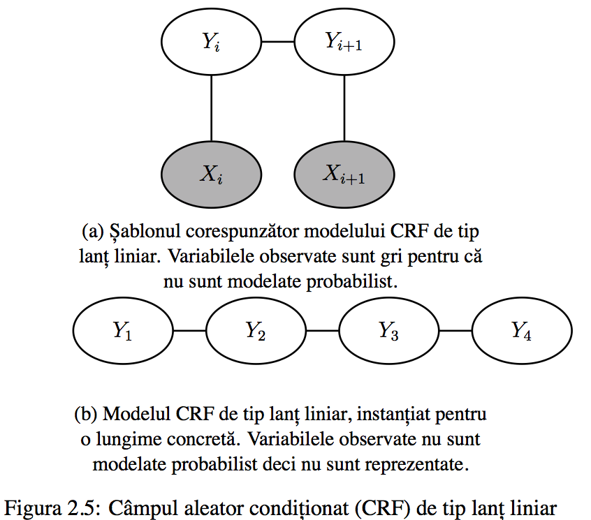
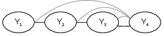
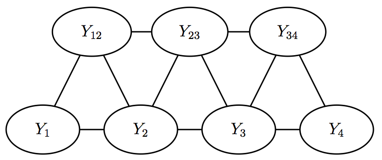

Învățare structurată și secvențială.
Aplicații în procesarea limbajului natural.
Absolvent: Vlad Niculae
Coordonator științific: Conf. dr. Liviu P. Dinu
Învățărea automată
$$ h : \mathcal{X} \rightarrow \mathcal{Y} $$
- $\mathcal{Y} = \{+, -\}$: clasificare binară
- $\mathcal{Y} = \{a, b, c, ...\}$: clasificare cu mai multe clase
- $\mathcal{Y} = \mathbf{R}$: regresie

$h$ se deduce din date
- supervizat: $\mathcal{D_s} = \{(x, y): x \in \mathcal{X}, y \in \mathcal{Y}\}$
- nesupervizat: $\mathcal{D_n} = \{x : x \in \mathcal{X}\}$
- semisupervizat $\mathcal{D_s} + \mathcal{D_n}$
Învățarea structurată
- $\mathcal{Y}$ e prea mare pentru a fi enumerat, dar este organizat după o structură
- $\mathcal{X}$ poate fi și el structurat
Structură redusă: învățarea cu etichete multiple
Exemplu: categorizarea textelor
- Liviu Rebreanu - Ion: {dramă, viața satului}
- Liviu Rebreanu - Pădurea Spânzuraților: {război, dramă, dezertare}
- ...
- Marin Preda - Moromeții: {familie, viața satului, timp, educație}
$\mathcal{Y} = \mathbf{P}(${dramă, familie, război, dezertare, ...}$)$ -- spațiu uriaș!
Clasificare cu etichete multiple: câte un clasificator binar pentru fiecare etichetă
Exemple de structură
- Clasificare multi-etichetă
- Regresie ordinală / clasare / ranking
- Etichetare pe grafuri (ex: secvențe, rețele)
- Învățare de arbori (parsare în NLP)
Etichetare
$$ x = (x_1, x_2, ... x_p)$$ $$ y = (y_1, y_2, ... y_p)$$ $$ y_i \in \text{Tag} $$
Exemple:
| $x_p$ pixeli, $\text{Tag} = \{\text{vacă}, \text{iarbă}, \text{cer} ... \}$: segmentarea imaginii | |
| Smith/NNP is/VBZ in/IN his/PRP office/NN ./. | $x_p$ cuvinte, $\text{Tag} = $ părți de vorbire |
| me-te-o-ro-lo-gie | $x_p$ spații dintre caractere, $\text{Tag} = \{ -, \lambda \}$ |
Etichetare secvențială în NLP
Chunking
- fragmente coerente în interiorul unei propoziții
- util pentru sarcini de nivel superior (ex. rezolvarea coreferenței între $NP$-uri)
[$^{NP}$ El ] [$^{VP}$ consideră ] că [$^{NP}$ deficitul curent al contului ] [$^{VP}$ se va micșora ] până la [$^{NP}$ numai # 1.8 miliarde ] în [$^{NP}$ septembrie ]
Ca etichetare secvențială: $x_p$ cuvinte, $\text{Tag} = \{O\} \cup \{B, I\} \times \{NP, VP, PP, ...\}$ (etichete BIO)
| Împăratul | Franței | a | fost | asasinat |
|---|---|---|---|---|
| B−NP | I−NP | B−VP | I−VP | I−VP |
Conjugarea verbelor parțial neregulate
-
Alternanțe în rădăcină:
- a tresălta / tresalt / tresalți alternanța a/ă, t/ț
-
Verbe cu infinitive similare au neregularități complet diferite:
- a purta / port / purtăm / poartă
- a curta / curtez / curtăm / curtează
-
Litere variabile (Moisil): litere din infinitiv ce se realizeaza diferit la conjugare
- $a_1$
: a/a/a/ă/a/a - $t_0$
: t/ț/t/t/ț/t
- $a_1$
-
Similar, terminații: $T_1$: $\lambda$
/i/ă/ăm/ați/ă
Ca etichetare secvențială: $x_p$ litere din infinitiv, $\text{Tag} = \{0\} \cup \text{litere variabile} \cup \text{terminatii}$
| t | r | e | s | ă | l | t | a |
|---|---|---|---|---|---|---|---|
| 0 | 0 | 0 | 0 | $a_1$ | 0 | $t_0$ | $T_1$ |
Despărțirea în silabe și identificarea accentului
- setul de date RoMorphoDict
- cuvinte-formă cu despărțirea în silabe
- cel mult o vocală marcată cu accent
Ca etichetare secvențială: două probleme
-
silabe: $x_p$: spații dintre caractere, $\text{Tag} = \{\lambda, -\}$ (NB) sau $\{0, 1, 2... \}$ (#NB = distanța de la ultima despărțire)
-
accent: $x_p$: caractere, $\text{Tag} = \{-, + \}$
d i a m a n t 1 0 0 1 2 3 $-$ $-$ $-$ $-$ $+$ $-$ $-$
Modele pentru învățarea secvențială
Model Markov Ascuns (HMM)
- model generativ: modelează $P(X, Y)$
- Presupunerea Markov (lanturi de ordin I): $Y_{t+1} \bot Y_{t-1} | Y_t$
- Parametrizare factorizată: $$P(X_{t+1}=a|X_{t}=b) = p(a, b)$$ $$P(X_t=a|Y_t=y) = o(a, y)$$

Câmp aleator condițional (CRF)
- Caz particular al câmpurilor Markov aleatoare (modele grafice neorientate)
- Model discriminativ: modelează $P(Y|X)$, nu propune un model al variabilelor de intrare.
- Parametrizare log-liniară (generalizare secvențială a regresiei logistice/maxent): $$P(Y|X; w) = \frac{1}{Z} \exp\left(\sum_{p\in\mathcal{P}} w^T f_p(x, y_p)\right)$$

Antrenarea CRF
Inferență MAP
$$ \hat{y} = \underset{y \in \mathcal{Y}}{\operatorname{arg\,max\,}} w^T f(x, y) $$
Inferență augmentată prin cost
$$ \overline{y} = \underset{y' \in \mathcal{Y}}{\operatorname{arg\,max\,}} w^T f(x_i, y') + \rho(y', y_i) $$
Perceptronul structurat
$$w' \leftarrow w + f(x_i, y_i) - f(x_i, \hat{y})$$
Algoritmi pasiv-agresivi
- Familie de algoritmi de tip online max-margin
- Update-ul PA-I \begin{equation} \begin{aligned} \operatorname{min}_w & \frac{\lambda}{2}||w - w'||^2 + \xi \\ \operatorname{cu\,constrângerile\,} & \xi > 0 \\ & w^{T}f(x_i, y_i) \geq w^{T}f(x_y, \overline{y}) + \rho(\overline{y}, y_i) + \xi \end{aligned} \end{equation}
AROW
- Similar cu PA, estimează o distribuție gaussiană $w \sim \mathcal{N}(\mu, \Sigma)$
- Minimizează la fiecare iterație
$$C(\mu, \Sigma) = \operatorname{D}_\text{KL}(\mathcal{N}(\mu', \Sigma') || \mathcal{N})) + \lambda_1 \rho(y_i, \mu x_i) + \lambda_2 x_i^{T} \Sigma x_i$$
- De regulă, $\lambda_1 = \lambda_2 = \frac{1}{2r}$
SVM structurat
-
Generalizare a SVM-ului nestructurat la pierderea balama structurată: $$ L_{\text{SSVM}}(w; x, y) = -w^T f(x, y) + \max_{y'} \left(w^T f(x, y') + \rho(y', y)\right)$$
-
Optimizează:
\begin{equation} \begin{aligned} \operatorname{min} & \frac{1}{2} ||w||^2 + C\sum_x \xi_x \\ \operatorname{cu\,constrângerea\,} & w^T f(x_i, y_i) \geq w^T f(x_i, \overline{y}) + \rho(\overline{y}, y_i) \xi_x \forall i \end{aligned} \end{equation}
Verosimilitate maximă (algoritmul CRF)
- Minimizează peste întregul set de date $$ L_{\text{CRF}}(w; x, y) = \log \sum_{y'} \exp \left( \sum_{p\in\mathcal{P}}w^T(f_p(x, y'_p) - f_p(x, y_p)) \right)$$
Experimente
Chunking cu reprezentări ale cuvintelor
Setul de date CONLL 2000, etichetare BIO, evaluarea oficială
Trăsături:
-
lexicale (baseline):
- $w_i$ pentru $i \in \{−2, −1, 0, +1, +2\}$
- $w_i w_{i+1}$ pentru $i \in \{−1, 0\}$.
-
părți de vorbire (baseline):
- $t_i$ pentru $i \in \{−2, −1, 0, +1, +2\}$,
- $t_i t_{i+1}$ pentru $i \in \{−2, −1, 0, +1\}$.
- $t_i t_{i+1} t_{i+2}$ pentru $i \in \{−2, −1, 0\}$.
- Clustere Brown
- Algoritm de aglomerare ierarhică bazat pe maximizarea informației mutuale între bigrame.
- Reprezentări C&W (Turian)
- Model neural de clasificare binară
- Discriminează n-grame corecte și n-grame corupte (cuvântul curent înlocuit cu un cuvânt aleator)
- Reprezentări HLBL
- Model neural ierarhic log-biliniar
- Prezice reprezentarea vectorială a cuvântului următor, date fiind reprezentările cuvintelor anterioare
Rezultate
| sistem | acc. valid. | $F_1$ valid. | acc. test | $F_1$ test |
|---|---|---|---|---|
| ML Baseline | 96.10 | 93.61 | 95.87 | 93.48 |
| ML (a) Brown 3200cls | 96.51 | 94.47 | ||
| ML (b) HLBL 100dim | 96.33 | 94.12 | ||
| ML (c) C&W 25dim | 96.32 | 94.07 | ||
| ML (a) + (b) | 96.49 | 94.45 | ||
| ML (a) + (c) | 96.49 | 94.41 | ||
| ML (b) + (c) | 96.38 | 94.28 | ||
| ML (a) + (b) + (c) | 96.50 | 94.52 | 96.26 | 94.24 |
| AP (a) + (b) + (c) | 96.57 | 94.42 | 96.12 | 93.98 |
| PA (a) + (b) + (c) | 96.47 | 94.38 | 96.18 | 94.08 |
Conjugarea verbelor
Model
- Lanț liniar CRF
- Skip-CRF (dependențe între nodul final și toate celelalte)

- Din cauza buclelor, inferența exactă nu e tractabilă. Evaluăm o metodă mai rapidă (QPBO) și una mai exactă (AD$^3$)
Rezultate
| metoda | ps | pt | $n$ | $\Theta$ | $N$ | cuv valid. | char valid. | char$'$ valid. | cuv test | char test | char$'$ test |
|---|---|---|---|---|---|---|---|---|---|---|---|
| ML | $1$ | $1$ | $4$ | $\alpha=0.1$ | - | $0.924$ | $0.987$ | $0.913$ | $0.914$ | $0.985$ | $0.900$ |
| AP | $0$ | $1$ | $4$ | - | $10$ | $0.923$ | $0.987$ | $0.917$ | $0.912$ | $0.985$ | $0.900$ |
| PA | $1$ | $0$ | $4$ | $C=1$ | $10$ | $0.925$ | $0.987$ | $0.917$ | $0.912$ | $0.984$ | $0.900$ |
| AROW | $1$ | $1$ | $4$ | $r=100$ | $100$ | $0.916$ | $0.986$ | $0.912$ | $0.908$ | $0.984$ | $0.895$ |
| AP-skip AD$^3$ | - | - | $4$ | - | $50$ | - | $0.984$ | - | $0.906$ | $0.983$ | $0.896$ |
| AP-skip QPBO | - | - | $4$ | - | $50$ | - | $0.984$ | - | $0.903$ | $0.983$ | $0.893$ |
- ps, pt: generarea tuturor stărilor și tranzițiilor posibile, chiar și cele ce nu apar
- $n$: mărimea ferestrei pentru n-grame
- $\Theta$: regularizarea
-
$N$: numărul de iterații
-
char: acuratețea la nivel de caracter, exceptând clasa $0$
Despărțirea în silabe si identificarea accentului
Model

- Model în cascadă: rezultatul predicției pe silabe se folosește pentru accent
- Antrenarea și evaluarea folosește despărțirile reale
Trăsături
- Pentru silabe: n-grame în fereastră
- Pentru accent: n-grame în fereastră, plus 6 trăsături silabe (sil): poziția curentă este:
- imediat după o despărțire
- imediat înainte de o despărțire
- în prima silabă a cuvântului
- în a doua silabă a cuvântului
- în ultima silabă a cuvântului
- în penultima silabă a cuvântului
Rezultate
- despărțirea în silabe folosind algoritmul CRF
model $n$ regularizare acc. despărțire $F_1$ despărțire acc. cuvânt CRF NB $4$ $c=0.1$ $99.15%$ $98.83%$ $94.67%$ CRF #NB $4$ $c=1.0$ $99.23%$ $98.94%$ $95.25%$
- accent folosind perceptronul în medie
model eșantion $N$ acc. $P$ $R$ $F_1$ bigrams validare $10$ $96.04%$ $82.66%$ $72.80%$ $77.41%$ bigrams test $10$ $96.06%$ $82.87%$ $72.73%$ $77.47%$ bigrams+sil validare $50$ $97.17%$ $86.10%$ $76.63%$ $81.09%$ bigrams+sil test $50$ $96.67%$ $86.17%$ $76.82%$ $81.11%$
Concluzii
- CRF-urile liniare obțin rezultate competitive
- Antrenarea online discriminativă realizează scoruri comparabile cu ML, cu antrenare mai rapidă și soluții mai simple
- Modelul "skip" nu întrece performanța modelului liniar, deși inferența îl face mult mai lent (date prea puține)
Perspective de viitor
- Antrenare multi-obiectiv simultană silabe-accent
- Constrângeri deterministe AtMost1 implementate în inferența AD$^3$ pentru accent
- Învățarea șablonului complet de accentuare din texte poetice, folosind RoMorphoDict ca supervizare parțială